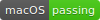
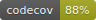
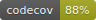

WeRoBot
 

![https://img.shields.io/badge/QQ%20Group-283206829-brightgreen.svg?logo=data%3Aimage%2Fsvg%2Bxml%3Bbase64%2CPHN2ZyB3aWR0aD0iMTc5MiIgaGVpZ2h0PSIxNzkyIiB2aWV3Qm94PSIwIDAgMTc5MiAxNzkyIiB4bWxucz0iaHR0cDovL3d3dy53My5vcmcvMjAwMC9zdmciPjxwYXRoIGQ9Ik0yNzAgODA2cS04LTE5LTgtNTIgMC0yMCAxMS00OXQyNC00NXEtMS0yMiA3LjUtNTN0MjIuNS00M3EwLTEzOSA5Mi41LTI4OC41dDIxNy41LTIwOS41cTEzOS02NiAzMjQtNjYgMTMzIDAgMjY2IDU1IDQ5IDIxIDkwIDQ4dDcxIDU2IDU1IDY4IDQyIDc0IDMyLjUgODQuNSAyNS41IDg5LjUgMjIgOThsMSA1cTU1IDgzIDU1IDE1MCAwIDE0LTkgNDB0LTkgMzhxMCAxIDEuNSAzLjV0My41IDUgMiAzLjVxNzcgMTE0IDEyMC41IDIxNC41dDQzLjUgMjA4LjVxMCA0My0xOS41IDEwMHQtNTUuNSA1N3EtOSAwLTE5LjUtNy41dC0xOS0xNy41LTE5LTI2LTE2LTI2LjUtMTMuNS0yNi05LTE3LjVxLTEtMS0zLTFsLTUgNHEtNTkgMTU0LTEzMiAyMjMgMjAgMjAgNjEuNSAzOC41dDY5IDQxLjUgMzUuNSA2NXEtMiA0LTQgMTZ0LTcgMThxLTY0IDk3LTMwMiA5Ny01MyAwLTExMC41LTl0LTk4LTIwLTEwNC41LTMwcS0xNS01LTIzLTctMTQtNC00Ni00LjV0LTQwLTEuNXEtNDEgNDUtMTI3LjUgNjV0LTE2OC41IDIwcS0zNSAwLTY5LTEuNXQtOTMtOS0xMDEtMjAuNS03NC41LTQwLTMyLjUtNjRxMC00MCAxMC01OS41dDQxLTQ4LjVxMTEtMiA0MC41LTEzdDQ5LjUtMTJxNCAwIDE0LTIgMi0yIDItNGwtMi0zcS00OC0xMS0xMDgtMTA1LjV0LTczLTE1Ni41bC01LTNxLTQgMC0xMiAyMC0xOCA0MS01NC41IDc0LjV0LTc3LjUgMzcuNWgtMXEtNCAwLTYtNC41dC01LTUuNXEtMjMtNTQtMjMtMTAwIDAtMjc1IDI1Mi00NjZ6IiBmaWxsPSIjZmZmIi8%2BPC9zdmc%2B](68747470733a2f2f696d672e736869656c64732e696f2f62616467652f51.svg)
WeRoBot 是一个微信公众号开发框架，采用MIT协议发布。
文档在这里： https://werobot.readthedocs.org/zh_CN/latest/
安装
推荐使用 pip 进行安装
pip install werobot
如果你没有安装 pip 而且正在使用一台 OS X / Linux 电脑，那么你应该运行
curl http://peak.telecommunity.com/dist/ez_setup.py | python curl https://raw.github.com/pypa/pip/master/contrib/get-pip.py | python
如果你是 Windows 用户， 那么下载 http://peak.telecommunity.com/dist/ez_setup.py 和 https://raw.github.com/pypa/pip/master/contrib/get-pip.py 这两个文件，双击运行。
Hello World
一个非常简单的 Hello World 微信公众号，会对收到的所有文本消息回复 Hello World
import werobot
robot = werobot.WeRoBot(token='tokenhere')
@robot.text
def hello_world():
return 'Hello World!'
robot.run()
Session
WeRoBot 在 0.4.0 版本中开始支持 Session ， Session 可以用来方便的记录用户数据
import werobot
robot = werobot.WeRoBot(token='tokenhere')
@robot.text
def session(message, session):
last = session.get("last", None)
if last:
return last
session["last"] = message.content
return '这是你第一次和我说话'
robot.run()